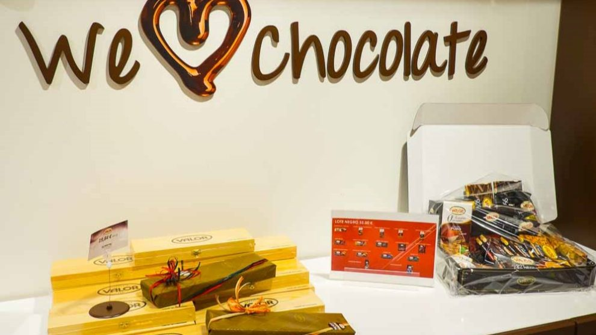

Los mejores sitios para los amantes del chocolate
- Lindt, el Hogar del Chocolate - Kilchberg (Suiza)
-
Es de bien sabido que al hablar del chocolate de calidad siempre se acaba mencionando el chocolate suizo. Pues bien, qué mejor sitio para disfrutar de lo auténtico que el Museo Lindt del chocolate.

Foto de Kseniia Zapiatkina en Unsplash - Ritter Sport Bunte Schokowelt - Berlin (Alemania)
-
¿Alguna vez has querido hacer tu propio chocolate? ¿Estás interesado en embarcarte en un mundo lleno de color para degustar el auténtico placer culinario? ¡No busques más!

Foto de Hans en Pixabay - Museo del chocolate Valor
-
Si lo que buscas es poder disfrutar del chocolate desde tierras españolas no hy mejor lugar que el Museo del Chocolate Valor. Aquí aprenderás todo lo que necesitas para ser un auténtico experto en el proceso de fabricación.

Foto de Angel Martínez Bermejo en GuiasViajar